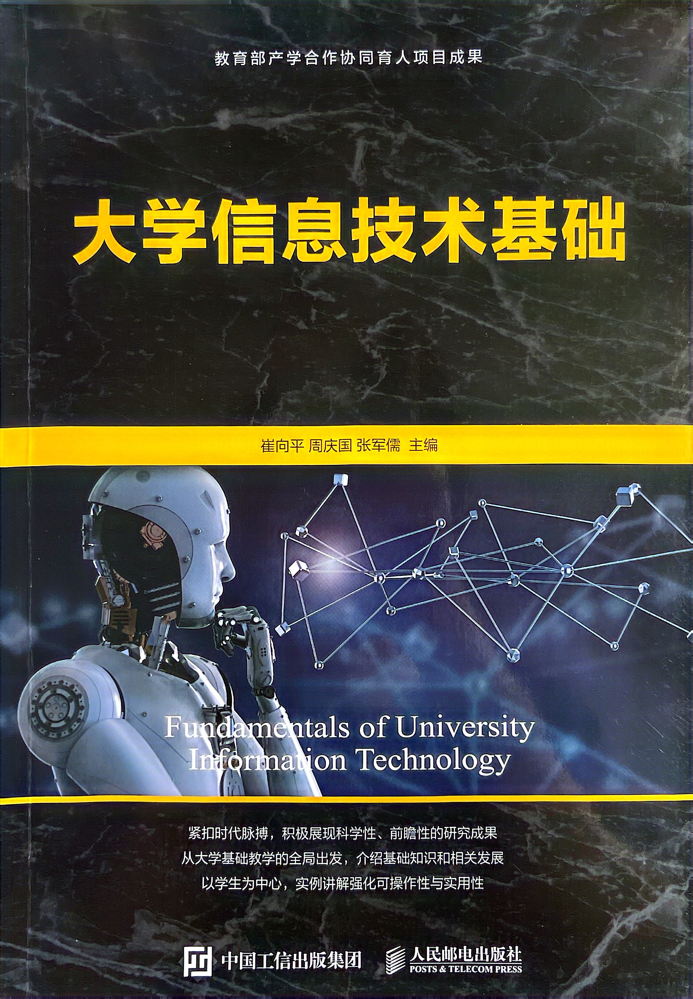

精选课程
大学信息技术基础
课程简介
信息技术的发展与人类的生活息息相关，其变革也深刻影响和推动着人类教育的变革和发展。《大学信息技术基础》（第1版）于2021年3月出版，出版后受到广大本科院校和职业院校师生的喜爱。然而，时至今日，第1版出版已经整整3年了，信息技术领域的发展和变化速度是任何其他技术领域都望尘莫及的，因此，伴随着人工智能、大数据和云计算等新一代信息技术的快速发展和国家提出“建设数字中国”和“推进教育数字化”等重要时代议题，本书做了相应更新，并推出第2版，积极展现信息技术相关领域的最新成果。中共中央、国务院印发的《中国教育现代化2035》指出要充分激发信息技术在日常教学中的深入、广泛应用及革命性影响，从而加快实现我国的教育现代化。尽管各学科对信息技术应用的需求不同，但信息技术不仅为各学科解决专业问题提供了途径，还提供了一种解决问题的思维方式，许多重要的研究都需要先进的信息技术，因此，为大学生开设信息技术基础课程尤为必要。
